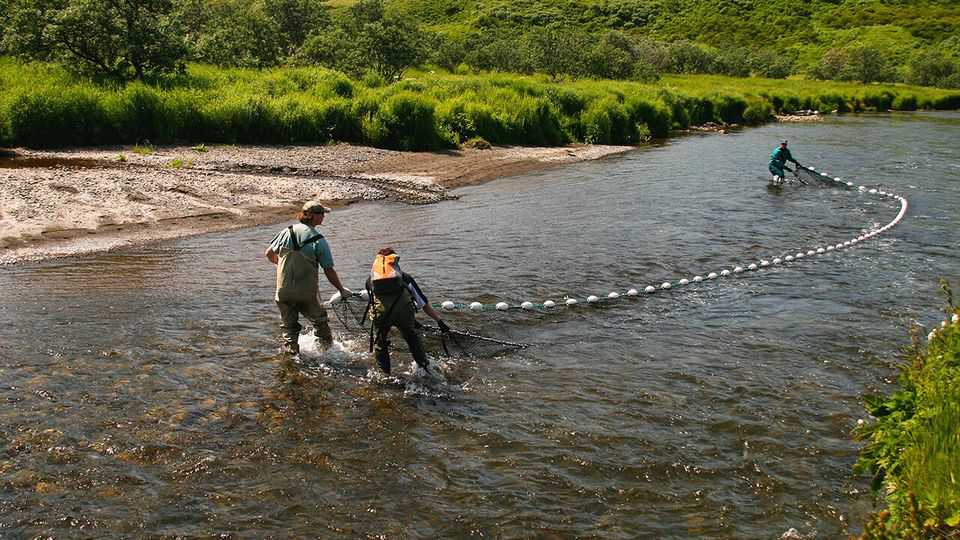

How salmon evolved to cope with the ice age
Their odd behaviour seems to be a relic of the time of the glaciers

Aug 27th 2026
Some species thrived during the last ice age. Sabre-toothed cats, giant ground sloths, woolly mammoths and woolly rhinos all did pretty well. Others, however, were seriously inconvenienced—among them the chum salmon of north-western North America, which frequently found the rivers leading to and from their inland spawning grounds icebound.
For those cut off in the sea, this was a nuisance. They had to make alternative arrangements, by seeking other, more accessible bodies of fresh water in which to lay their eggs. Those cut off on the land side, though, were stuck. And it was assumed until recently that because they were unable to complete the marine part of their life-cycle, they died out.
Not so, it turns out. A study published recently in Quaternary Research by Patrick Martin, an avid fisherman with a sideline as an amateur scientist, has employed genetics to show that some of the left-behinds not only endured, but thrived.
Pacific chum salmon range around that ocean’s rim from Japan and the Koreas to the coast of Oregon. Naturally, there is genetic variation in such a widespread population. Some of this variation is, though, so extreme that it has left researchers baffled. Three particular hot spots are around Kodiak island and nearby Cook inlet, in Alaska, and in the Salish sea between British Columbia and Washington state.
Intriguingly, it is not only the fishes’ genetics that differ, but also their behaviours. Most salmon migrate from the sea into fresh water to spawn in autumn or winter. The Salish sea population does so in summer. Similarly, salmon generally spawn in rivers. One of the Cook inlet populations, by contrast, does so in a lake.
Isolation over periods of thousands of years is well understood to drive evolution. This is obvious on small islands, such as the Galápagos. But walls of ice can isolate, too. With this in mind, Mr Martin speculated that the Kodiak, Cook and Salish salmon are genetically different from their neighbours because they got trapped, and survived, in glacial lakes.
Between 23,000 and 15,000 years ago glaciers created a lake on Kodiak island, with an area of 1,000 square kilometres and a depth of 300 metres. Glacial lakes also formed in valleys around the Olympic mountains of modern-day Washington state. To test his hunch, Mr Martin therefore convened a team of ichthyologists and geologists from the University of Washington and America’s National Oceanic and Atmospheric Administration to analyse the genes of 32,817 specimens from 310 populations around the Pacific rim.
One question that needed an answer was whether the unusual genetics could be explained by a few salmon from Asia having taken a wrong turn and introduced their DNA into their North American cousins. The aberrant populations, however, bore no close relation to their Asian kin. Instead, the team proposes that the ancestors of these survived the ice age isolated in freshwater lakes, where they went their own sweet evolutionary ways.
During this period, Mr Martin and his colleagues argue, the fish rejigged their behaviour to treat the lakes they were trapped in like miniature oceans, complete with migrating up glacial streams feeding the lakes to spawn. That rejigging then persisted, at least in part, when the ice dams melted and the fish were liberated into the sea.
At least some of chum salmon’s genetic peculiarities are thus, presumably, the drivers of their unusual behaviours. But others could be relics of physiological adaptations to the stress of a life confined to fresh water in a species that normally spends much of its existence in the briny. That is of interest to evolutionary biologists. It may also intrigue conservationists, for genetic diversity is a good insurance against extinction and these odd salmon populations have diversity in spades. And fish farmers may take notice as well, if they are thinking about trying to raise salmon in colder waters or even freshwater lakes, where sea lice are absent and infectious pathogens less common. ■